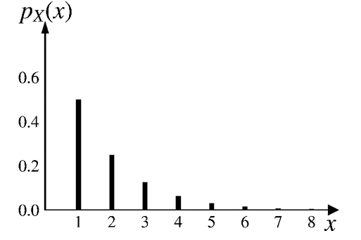
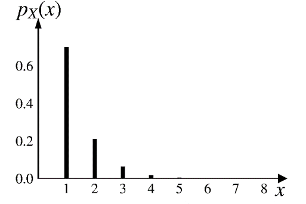
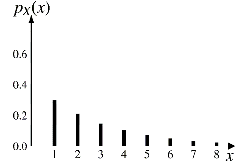

class: middle, center .huge[Geometric distribution] <br>  --- # [Geometric random variable](https://en.wikipedia.org/wiki/Geometric_distribution) Keep tossing a coin. At each toss - It lands on a heads  with probability of $p$ - It lands on a tails  with probability of $1-p$. -- $X$: the number of tosses needed to get the .red[first heads] .center[] -- We refer to $X$ as a geometric RV with parameter $p$. $$X \sim \text{geo}(p)$$ --- .center[] PMF: -- $$p_X(k)=\text{P}(X=k)=(1-p)^{k-1}p, \;\;\;\;\;\;\text{for } k=1, 2, \cdots$$ -- It can also be written as: $$ \begin{aligned} p_X(1)&=p \\\ \\\ p_X(k)&=\color{red}{p_X(k-1)}\cdot(1-p),\;\;\;\;\;\;\text{for } k=2, 3, \cdots \\\ \end{aligned} $$ -- With a common ratio $(1-p)$, the PMF follows a [geometric sequence](https://en.wikipedia.org/wiki/Geometric_series), hence the name of the RV. --- class: center $\text{geo}(0.5)\;\;\;$ <p></p> -- $\text{geo}(0.7)\;\;\;$ <p></p> -- $\text{geo}(0.3)\;\;\;$ <p></p> --- class: center, middle .huge[[Interactive visualization](https://probstats.org/geometric.html)] --- # Cumulative distribution function (CDF) $$ \small{ \begin{aligned} F_X(k)=\text{P}(X\leq k)&=\sum_{i=1}^k (1-p)^{i-1}p \\\ \\\ &=p\cdot\frac{1-(1-p)^k}{1-(1-p)} \\\ \\\ &=1-(1-p)^k \\\ \\\ \end{aligned} } $$ -- $$ \small{ \begin{aligned} \text{An easier proof:} \;\;\;\; F_X(k)=\text{P}(X\leq k)&=1-\text{P}(X>k) \\\ \\\ &=1-\text{P}(\text{all $k$ tosses are tails})\\\ \\\ &=1-(1-p)^k \\\ \end{aligned} } $$ --- # Expectation & variance <br> $$p_X(k)=\text{P}(X=k)=(1-p)^{k-1}p, \;\;\;\;\;\text{for } k=1, 2, \cdots$$ <br> $$ \begin{aligned} \text{E}[X]&=\sum_{k=1}^{\infty} k (1-p)^{k-1}p = \frac{1}{p} \\\ \\\ \text{var}(X)&=\text{E}[X^2]-\big(\text{E}[X]\big)^2=\frac{1-p}{p^2} \\\ \end{aligned} $$ --- # Exercise You rented a large house and the landlord gave you 5 keys, one for each of its 5 doors. Unfortunately, all keys look identical 🔑🔑🔑🔑🔑 You are at the front door and try the keys at random. Using each of the two strategies below - After an unsuccessful trial, you mark the wrong key, so that you will not try it again. - At each trial you randomly choose any key. what is the expected # of trials to open the front door? --- class: center # [Gambler's fallacy](https://en.wikipedia.org/wiki/Gambler%27s_fallacy) <iframe width="750" height="500" src="https://www.youtube.com/embed/4eVluL-idkM" frameborder="0" allow="accelerometer; clipboard-write; encrypted-media; gyroscope; picture-in-picture" allowfullscreen></iframe> --- # [Memoryless property](https://en.wikipedia.org/wiki/Memorylessness) of geometric RV Given that a coin has been tossed $t$ times with all tails, the probability of needing more than another $s$ tosses to get a first heads, is the same as the prob. of needing more than $s$ tosses to get a first heads originally. $$\text{P}(X>t+s|X>t)=\text{P}(X>s)$$ $$\text{for all nonnegative integers $t$ and $s$}$$ It's called memoryless because .red[the past has no bearing on its future behavior]. --- # Proof of the memoryless property $$ \begin{aligned} \text{P}(X>t+s|X>t)&=\frac{\text{P}\big((X>t+s) \cap (X>t)\big)}{\text{P}(X>t)} \\\ \\\ &=\frac{\text{P}(X>t+s)}{\text{P}(X>t)} \\\ \\\ &=\frac{(1-p)^{t+s}}{(1-p)^t} \\\ \\\ &=(1-p)^s \\\ \\\ &=\text{P}(X>s) \\\ \end{aligned} $$